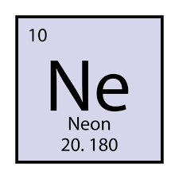

Lyn's Chem Poster [website]

Neon [Ne]
Atomic Number: 10
Atomic Mass: 20.1797
10 Protons, 10 neutrons, and 10 electrons.
Neon is a Noble Gas
Neon is colorless and odorless. It glows reddish-orange in a vacuum discharge tube.
Neon has three naturally occurring, stable isotopes: neon-20 (90.48%), neon-21 (0.27%), and neon-22 (9.25%)
Neon was discovered in 1898 by the British chemists Sir William Ramsay (1852–1916) and Morris Travers (1872–1961) in London.
Neon is used in lighting (neon signs, indicator lights), lasers, plasma displays, and as a respiratory gas for divers.
Fun Fact: Neon is the fifth most abundant element in the universe, after hydrogen, helium, oxygen, and carbon.